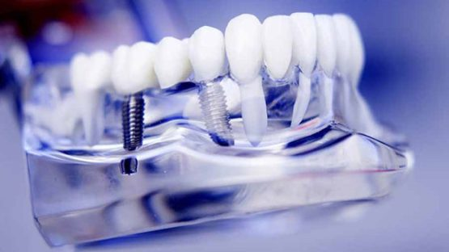

ایمپلنت چیست؟
ایمپلنت دندان، ابزار و ساختار مصنوعی دندانی ای هستند که از طریق روش جراحی درون استخوان فک قرار میگیرند تا جایگزین دندان های از دست رفته بشوند.قسمت های اصلی و اجزاء ایمپلنت دندان
ایمپلنت دندان از 3 بخش اصلی فیکسچر(پایه) و پروتز(روکش) و اباتمنت ساخته میشود:
فیکسچر یا پایه ایمپلنت دندان:
فیکسچر یا همان پایه ایمپلنت قسمت اصلی و مهمی است که ساختاری شبیه به پیچ دارد و نقش ریشه دندان را بر عهده میگیرد که زیر خط لثه در داخل استخوان فک قرار میگیرد و در واقع بخش مخفی ایمپلنت دندان است.پروتز (که معمولا روکش، بریج و دندان مصنوعی است):
پروتز یا همان روکش ایمپلنت نیز یکی دیگر از اجزاء ایمپلنت دندان است که نقش تاج دندان را برعهده دارد، دقیقا مانند یک دندان طبیعی به نظر می رسد و از مواد مختلفی مانند سرامیک ساخته می شود که قدرت و استحکام بالایی دارد.اباتمنت (یا ابوتمنت):
همانطور که می دانید پایه ایمپلنت زیر خط لثه و در استخوان فک قرار دارد و نمی تواند بدون رابط به قسمت پروتز ایمپلنت وصل شود. اباتمنت یا رابط بخشی است که پایه ایمپلنت را به پروتز وصل می کند و رابط ها پیچ های کوچکی فلزی هستند که از 2 قسمت تشکیل شده که یک قسمت آن ها به تاج دندان و قسمت دیگر به پیچ دندان وصل می شوند.آیا میتوانم برای هر دندان، ایمپلنت انجام بدهم؟
بله، حتی اگر تعداد زیادی از دندان هایتان از دست رفته باشد، بازهم می توانید یک جراحی کاشت ایمپلنت دندان برای هر دندان داشته باشید، یا با تشخیص پزشک ممکن است حتی نیاز به کاشت چند دندان بر روی پایه های کمتر داشته باشید، هرچند بهتر است قبل از هر تصمیمی با یک متخصص ایمپلنت مشورت کنید.مزایا و معایب ایمپلنت دندان
هر یک از روشهایی که به کاشت دندان منتهی میشوند، مزایای خاص خود را دارد. اما در این میان کاشت دندان به روش ایمپلنت، یک تکنیک عالی به شمار میرود. زیرا این روش خدمات ویژهای را در اختیار افراد قرار میدهد که میتوانند با اطمینان هزینه بالایی برای کاشت دندانهای خود با این روش بپردازند. از جمله؛طبیعی جلوه دادن دندانها
افرادی که اقدام به کاشت دندان با این روش مینمایند، میان دندانهای طبیعی خود و دندانهای کاشته شده تفاوتی مشاهده نخواهند کرد. این دندانها قابلیت استفاده بالایی دارند و همچون دندانهای طبیعی میتوان به راحتی با آنها غذا خورد. همچنین قدرت جویدن بالایی دارند و لازم است از نخ دندان و مسواک برای تمیز کردن آنها استفاده کرد.همچنین علاوه بر این موارد از ترمیمهایی همچون دندانهای مصنوعی و بریج دندان نیز حمایت میکند. از این رو کاشت دندان با این روش منجر به دائمی شدن آنها میگردد.
داشتن عمر طولانی دندانها
دومین مورد از خدمات ویژه کاشت دندان به روش ایمپلنت، عمر طولانی آن است. جنس ایمپلنتها از تیتانیوم بوده و این فلز از عمر طولانی برخوردار است. زمانی که در داخل دهان نصب میشود، دچار خوردگی نشده و میتوان به راحتی برای زمان طولانی از آنها استفاده کرد. همچنین افرادی که این روش کاشت دندان را انتخاب میکنند، هرگز دچار مشکلات و بیماریهای لثه نمیشوند.البته ممکن است تمام مشکلاتی که برای دندانهای طبیعی رخ میدهد، برای دندانهای ایمپلنت شده نیز رخ دهد. اما زمانی که پاکسازی این دندانها مرتب انجام شود و از آنها مراقبت شود، میتوان برای مدت زمان طولانی سلامت دندانهای کاشته شده را حفظ کرد.
جلوگیری از تحلیل استخوان فک
اصولاً افرادی که دندانهای طبیعی خود را از دست میدهند، در اولین سال با کاهش ۲۵ درصدی از حجم استخوان فک خود مواجه میشوند. در صورتی که این افراد اقدام به ایمپلنت دندان ننمایند، در طی سالهای بعد بیشتر با این تحلیل استخوان فک مواجه خواهند شد. اما زمانی که افراد اقدام به کاشت دندان با این روش مینمایند، همچون وجود دندانهای طبیعی از تحلیل رفتن استخوان فک جلوگیری مینمایند.حفظ دندانهای مجاور با ایمپلنت
در نهایت باید بیان کنیم که کاشت دندان با این روش میتواند منجر به حفظ دندانهای مجاور شود. معمولاً دندانهای مجاور نسبت به دندانهای پیش دیرتر خراب میشوند. از این رو با کاشت دندان میتوان ثبات این نوع دندانها را حفظ کرد. افراد بسیاری در مورد این موارد اطلاعات ندارند و به همین دلیل به سراغ روشهای دیگر کاشت دندان میروند.معایب ایمپلنت دندان
این روش درمانی دندانهای از دست رفته در کنار تمامی مزایایی که دارد دارای معایبی است که در ادامه به آنها اشاره میکنیم.- این روش نیاز به جراحی دارد.
- ایمپلنت گذاری طول درمان بالایی دارد و این پروسه ممکن است بین1 الی 6 ماه طول بکشد.
- ایمپلنت دندان با توجه به متریال مورد استفاده و فرآیند درمانی طولانی مدتی که دارد نسبت به سایر روشها هزینه بیشتری دارد.
- تمامی افراد مانند افراد دارای سرطان، دیابت و … نمیتوانند از این روش استفاده کنند.
- در صورتی که جراحی در این روش به خوبی انجام نشود میتواند عوارضی مانند عفونت، خونریزی و آسیبهای عصبی را به دنبال داشته باشد.

چه افرادی کاندید مناسبی برای ایمپلنت دندان نیستند؟
- افرادی که دارای سابقه شیمی درمانی یا رادیوتراپی هستند ویا اینکه تحت این درمانها هستند احتمال موفقیت آمیز بودن ایمپلنت برایشان خیلی کمتر است.
- افرادی که لثه سالمی ندارند. زیرا برای جراحی ایمپلنت باید استخوانهای فک قدرت و استحکام کافی داشته باشند.
- افرادی که از سیگار و سایر دخانیات استفاده میکنند. زیرا مصرف دخانیات موجب کاهش موفقیت آمیز بودن درمان میشود.
- بیمارانی که از داروهای مشتقات بیس فسفونات استفاده میکنند نیز نباید از این روش درمانی استفاده کنند.
ایمپلنت فوری دندان یا یک روزه
با توجه به اینکه ایمپلنت دندان در روش های معمولی کمی طول میکشد تا مراحل کاشت بصورت کامل انجام شود. در ایمپلنت فوری، دندان کاشته شدهی بیمار در سریعترین زمان ممکن میتواند نتیجهای مطلوب را به ارمغان بیاورد حال تفاوتی که بین ایمپلنت دندان فوری و ایمپلنت دندان سنتی وجود دارد این است که دوره بهبود روش فوری بسیار کمتر از روش سنتی می باشد به طوری که می توان مدت زمان انجام آن را یک روز بیان کرد. البته ذکر این نکته ضروری می باشد که تاج قرار داده شده بر روی پایه ایمپلنت دندان در این روش موقتی بوده و حتما باید با تاج اصلی و دائمی تعویض گردد.مراقبتهای پس از ایمپلنت دندان
- در چندین ساعت ابتدایی دراز بکشید و از انجام فعالیتهای سنگین بپرهیزید.
- یک کیسه یخ را دائما روی محل جراحی بگذارید و هر 10 دقیقه بردارید و مجددا این کار را انجام دهید. این پروسه باید 48 ساعت ادامه داشته باشد و پس ازآن بر روی آن ناحیه حوله گرم بگذارید.
- در صورتی که خیلی احساس درد دارید از داروهایی مثل nuprin، advil و Tylenol و همچنین داروهای ضد درد با تجویز پزشک استفاده کنید.
- سعی کنید از مصرف نوشیدنیهای داغ مانند چایی و غذاهای سفت که به جویدن زیاد نیاز دارند بپرهیزید.
- از مصرف سیگار و مشروبات الکلی خودداری نمایید.
- تا 48 ساعت پس از جراحی و ایمپلنت گذاری نباید ورزشهای شدید و سنگین انجام دهید.
ایمپلنت دیجیتال
ایمپلنت دیجیتال، یک روش درمانی برای جایگزینی دندانهای از دست رفته در علم نوین دندانپزشکی می باشد که با استفاده از آخرین متد و تکنولوژی دیجیتال، کاشت و قالبگیری و جراحی ایمپلنت صورت میگیرد. از مزایای ایمپلنت دیجیتال میتوان به دقت بالاتر و احتمال خطای تقریباً صفر و کاهش درد، خونریزی و دوره نقاهت و ناراحتی بیمار و سریعتر شدن و کوتاه شدن زمان مراحل درمان اشاره کرد. خدمات ایمپلنت دیجیتال در کلینیک دندانپزشکی ایثار طبق آخرین متود و تکنولوژی روز دنیا انجام میشود.
| مارک ایمپلنت دندان | قیمت ایمپلنت دندان | ضمانت |
|---|---|---|
| ایمپلنت Sewon medix | 13.000.000 تومان + روکش زیرکونیا | 10 سال |
| ایمپلنت سوئیسی Neodent | 17.000.000 تومان + روکش زیرکونیا | 20 سال |
| ایمپلنت آلمانی ICX dxl | 17.000.000 تومان + روکش سرامیکی | 15 سال |
| ایمپلنت اشترومن iti titanium | 24.000.000 تومان | 30 سال |
| ایمپلنت نئودنت neodent acqua | 17.000.000 تومان | مادام العمر |
| ایمپلنت زیمر Zimmer | 25.000.000 تومان | مادام العمر |
| ایمپلنت ایرانی 3A | 3.500.000 تومان | ندارد |
| هزینه های ایمپلنت دندانپزشکی تخصصی لبخند | ||